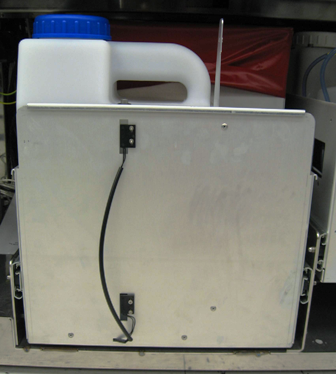
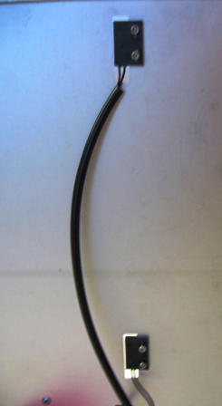
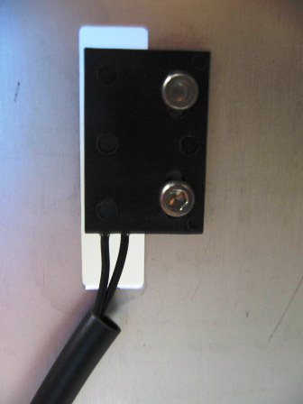
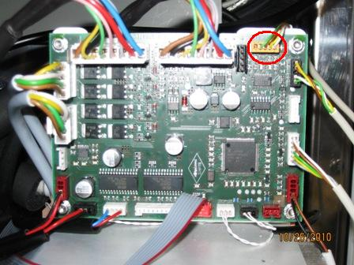
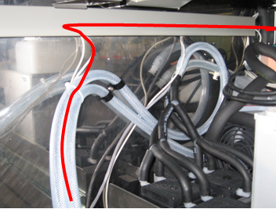
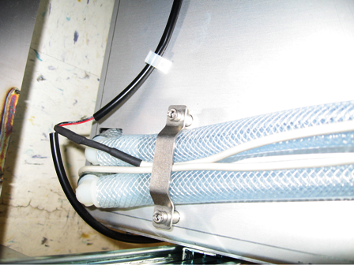

Parts and Materials Required
- Allen wrench, 2.5 mm
- Allen wrench, 3 mm
- WASTE DWR, BOTTLE EMPTY/FULL SENSOR ASSY
Time Required
- 60 minutes
Removal Procedure
- Put on proper PPE.
- Power down the Panther System.
- Open the left and right side panel doors.
 Open the Waste Drawer.
Open the Waste Drawer.- Slide the Waste Drawer open as far as possible.
- Using a 3 mm Allen wrench, remove two screws from the left side of the Waste Drawer
- Using a 3 mm Allen wrench, remove two screws from the right side of the Waste Drawer.
- Remove the 2.5 mm screw that secures the Waste Drawer front cover panel to the bracket.
- Remove the Waste Drawer front cover panel from the Waste Drawer and set the Waste Drawer front cover panel aside.
- Locate the Waste Drawer bottle empty/full sensor.


- Using a 2.5 mm Allen wrench, remove the two screws from the full sensor and the two screws from the empty sensor.

- On the Liquid Cooling Module PCB, unplug the waste full/empty sensor.

- Free the waste bottle empty/full sensor cable from the cable holder and vacuum hose. The red line in the picture below shows the path of the cable.

- Remove the waste bottle full/empty cable from the system.


Replacement Procedure
- Use four 2.5 mm screws, attach the bottle empty/full sensors to the Waste Drawer. Mounting holes are slotted to allow for vertical adjustment of the sensor. Install the sensor with the fastener located in the center of the mounting slot. The sensor may be adjusted if necessary.
- Route the sensor cable along the inside of the Waste Drawer to the back of the Waste Drawer.

- Continue routing the cable along the vacuum hose and in the cable holder.
- On the Liquid Cooling Module PCB, plug the waste bottle empty/full sensor into the PCB.
- Pull out the Waste Drawer so that the Waste Drawer front cover panel can be re-installed.
- Place the front cover panel in front of the Waste Drawer and align the brackets with the screw holes.
- Using a 3 mm Allen wrench, insert and tighten two 3 mm screws, washers, and lock washers on the left side of the drawer.
- Using a 3 mm Allen wrench, insert and tighten two 3 mm screws, washers, and lock washers on the right side of the drawer.
- Attach the bracket to the Waste Drawer front cover panel door with the 2.5 mm screw.
- Close the left and right side panel doors.
- Close the Waste Drawer.

Verification
- In service Software, make sure the waste bottle empty/full sensor reads correctly.
 button at the top of the page to send feedback, comments, or change requests.
button at the top of the page to send feedback, comments, or change requests.{kind=link}